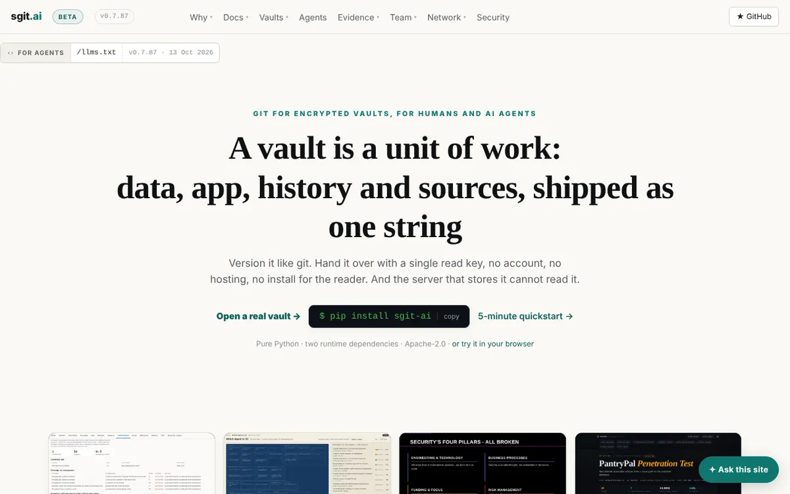
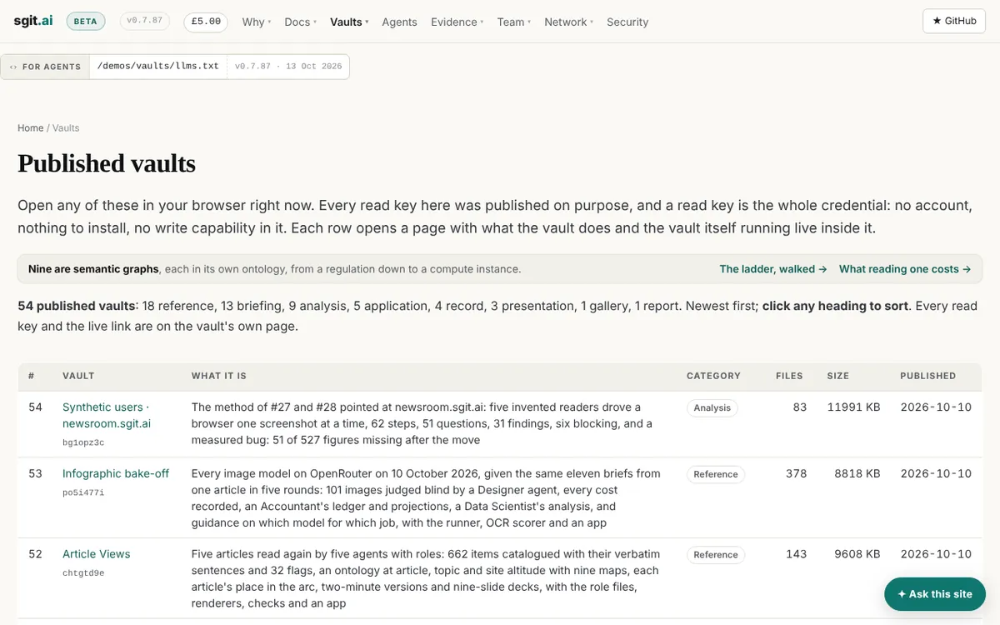
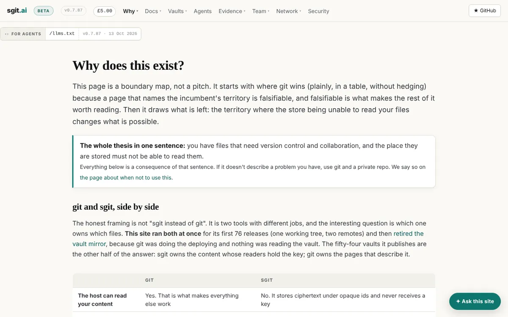

A vault is a unit of work: data, app, history and sources, shipped as one string1
"Version it like git. Hand it over with a single read key, no account, no hosting, no install for the reader. And the server that stores it cannot read it."

More of sgit.ai


What it is
sgit is a command-line tool for folders of files that are encrypted with AES-256-GCM on your own machine before they are uploaded. You clone, commit, branch, diff and merge them much as you would with git.2
The server stores only ciphertext under opaque IDs. It never sees filenames, file contents or commit messages.2
A vault can be handed to someone with a single read key: no account, no hosting and nothing for the reader to install. The same vault opens in a browser through SG/Vault.1
The code is free under Apache-2.0. What is sold is the running, maintained hosted service, at sgraph.ai; self-hosting is documented. sgit is marked beta.3413
Who it is for
- AI agents and the people working with them: agent state that must outlive the context window, shared between agents, with a human reviewing merges.14
- Professional services such as legal, M&A, audit and security assessment, handling client working documents.4
- Health and regulated sectors, where a host that provably cannot read the content changes what is allowed.4
- Not for everyone: if your files are not sensitive, the site says to use git and a private repository.45
How it works
- A folder becomes a vaultAn ordinary folder gains a .sg_vault directory. A commit snapshots the whole folder; there is no staging area.26
- Encrypted on your machineEvery commit, tree and blob is encrypted with AES-256-GCM before upload, with keys derived by PBKDF2 at 600,000 iterations.27
- The server sees ciphertextObjects are stored under opaque IDs. The server can see sizes and timing, never names or contents.27
- One string opens itThe vault key is address, credential and root of every key. A one-way read key decrypts but cannot write, so it can be published.24
- Merge, in terminal or browserEach machine or agent gets a private branch; shared branches merge three ways. The browser app speaks the same format.16
What it offers
sgit
The command-line tool: pip install sgit-ai. Pure Python, Python 3.11 or newer, two runtime dependencies, Apache-2.0.83
SG/Vault
A web app to browse and edit vaults and run their apps in the browser, an independent implementation of the same wire format.3
SG/Send
The zero-knowledge storage and transfer API both clients speak to, hosted by sgraph.ai or self-hosted.3
Published vaults
A catalogue of vaults with public read keys: 54 when last updated on 13 October 2026.10
SGit Newsroom
Articles, a newsletter and a reading meter, at its own address since October 2026.119
Key dates
- First sgit-ai release on PyPI, version 0.8.17.13
- Version 0.11.0; May ends with 36 releases in the month.13
- The sgit.ai site begins, at version 0.1.1.9
- Version 0.15.0, the release the security page cites for public-key signing.137
- The first published vaults, numbers 1 to 3.10
- The SGit Newsroom and newsletter are announced.12
- The newsroom moves to newsroom.sgit.ai; the site, at version 0.7.87, lists 54 vaults.910
- Version 0.27.0, the latest stable release when this page was checked.13
Sources
Every fact on this page comes from the company's own public pages, listed here. Numbers in the text point to them. Diagrams were drawn for this site from those facts.
- sgit.ai, home page read 20 November 2026
- sgit.ai, what is sgit read 20 November 2026
- sgit.ai, investors read 20 November 2026
- sgit.ai, why sgit read 20 November 2026
- sgit.ai, limitations read 20 November 2026
- sgit.ai, llms.txt read 20 November 2026
- sgit.ai, security read 20 November 2026
- sgit.ai, installation read 20 November 2026
- sgit.ai, site versions read 20 November 2026
- sgit.ai, published vaults read 20 November 2026
- SGit Newsroom, llms.txt read 20 November 2026
- sgit.ai, updates read 20 November 2026
- PyPI, sgit-ai release history read 20 November 2026
- sgit.ai, about read 20 November 2026